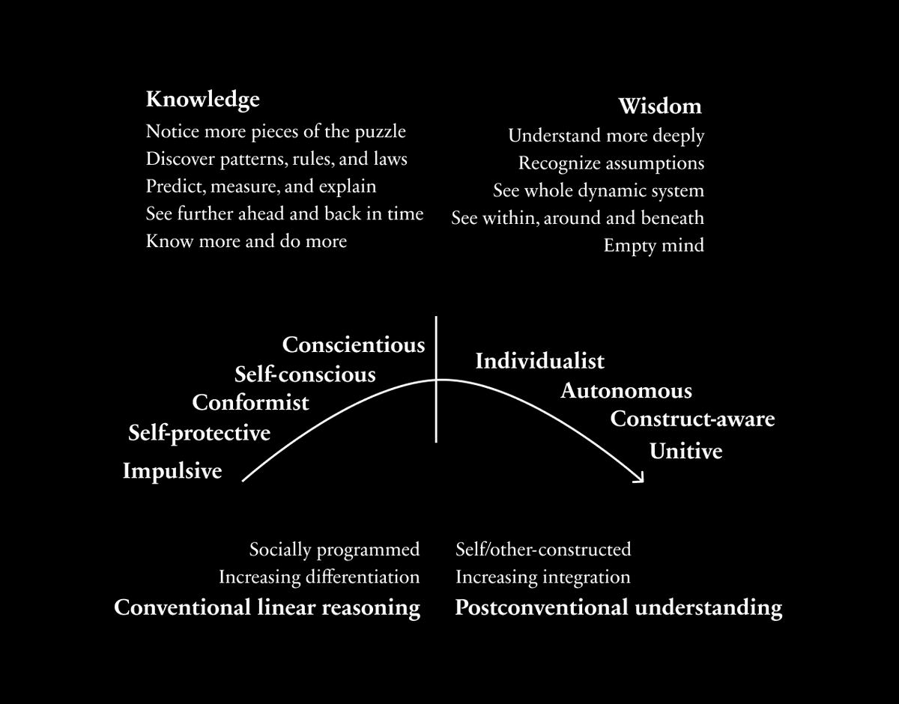
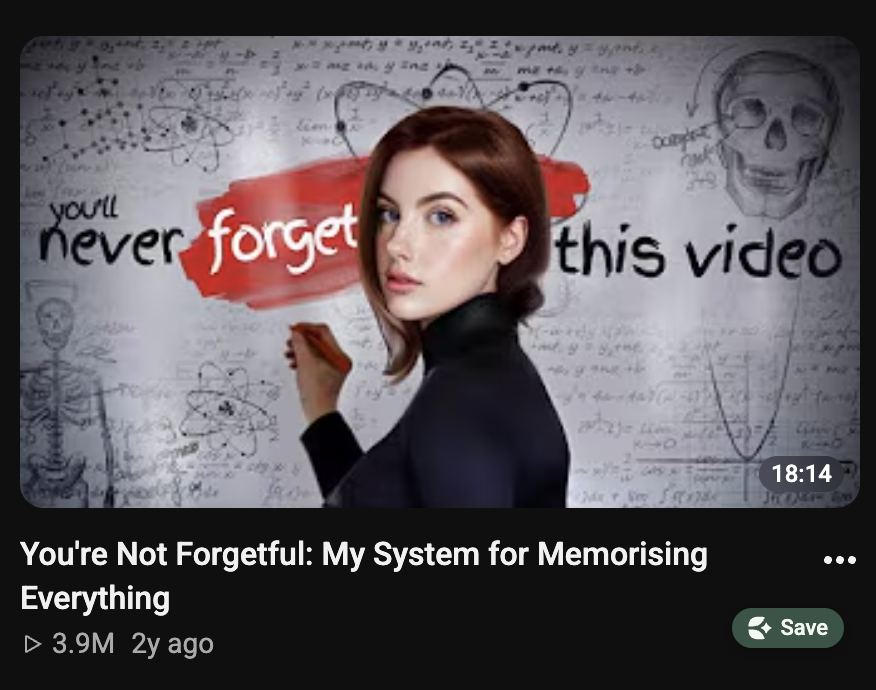

原题：The most profitable skill of the 21st century (not AI)
作者：Dan Koe（@thedankoe） | 发布：2026-07-04 | 原文：https://x.com/thedankoe/status/2073418764058825045
译注：【配图】为原文配图位置。第二节开头的引语与前一篇《我求你多写点随笔》开头的引语相同，原文如此。
AI? Coding? Marketing? Am I wasting my time if I go to school while everyone else is vibe coding apps they’ll never get traction on? Do I start a YouTube channel? What about a Substack? Should I even try getting a job? Or should I build my own thing?
There is more opportunity than ever, yet that opportunity paralyzes more people than ever. There are so many options, but you feel like if you start learning one thing, it will be irrelevant in the next 1-2 years.
然而，有一项技能永远不会过时。
However, there is one skill that will never go out of style.
Because if you understand how the human mind works - what makes it tick, what makes it pay attention, what makes it take action... then you can make any business successful. You can distribute the software you build and effectively market any other product. You can work your way into new opportunities. You can make friends and influence people. You can navigate through life with elegance and grace because you are no longer a slave to your mind, but a master of it.
How else are you going to succeed outside of a job? Humans are the ones with the money to pay for your independent work. Humans are the ones who have access to the resources and opportunities you want. And even if your goal is to get a job, how are you going to get your dream job if you do not understand this?
但你到底要如何"学会"像人性这样无形的东西？
But how in the world do you “learn” something as intangible as human nature?
在这封信里，我希望提供的就是这个：你今天就能应用的步骤和原则，它们会给你一种竞争优势，胜过所有其他争相尽快成功的人——那些人以为 AI 会以某种方式弥补他们经验的不足。
In this letter, that’s what I hope to provide: The steps and principles that you can apply today that will give you a competitive advantage against everyone else who is racing to succeed as fast as possible because they think AI will somehow save them from their lack of experience.
Subtle reminder: If you want to build an audience via writing on social media (to attract people who support your independent work), the bootcamp starts in 5 days. Enroll before then here.
人性的解剖（以及如何利用它）
The Anatomy Of Human Nature (And How To Exploit It)

【配图】
心智是一台故事引擎。
The mind is a story engine.
这是人类忍不住会注意的东西。
That’s what humans can’t help but pay attention to.
Robots are useful for utility. Nobody would care if the DMV was completely automated and made efficient. Who in their right mind looks forward to standing in a long line for hours just to get a new picture for your driver’s license?
Same with fast food, or riding in an Uber. Nobody likes when the cashier gets your order wrong. Nobody likes riding in a dirty back seat while someone you don’t know asks about your day simply because they want you to tip them.
让机器人去解决实用性，这样人类就能抽象出来，走向意义、使命和叙事。
Let the robots solve utility, that way, humans can abstract out to meaning, purpose, and narrative.
Humans love stakes. Our chest gets tight when their team is about to lose in the final quarter. Humans love novelty. We travel across the world to dine in a 5-star restaurant.
But I’m not going to teach you how to write a novel. No. Instead, I’m going to teach you the principles of value creation. If you understand these, you will write better, speak better, create better products, attract more customers, make more friends, and understand how to create value for others, thus increasing the value of yourself.
These may not sound extremely tangible or hyper practical like you get with all your ChatGPT generated bullet point summaries on how to get rich that you've done absolutely nothing with, but if you let what you are about to learn marinate in your mind for the next few months, and try to spot them in your everyday life, how you see the world will change.
本质上，我是在一次性地教你营销、销售，以及如何影响他人。
In essence, I am teaching you marketing, sales, and how to influence people all in one go.
The mind has three pressure points. Press any one of them, and attention is almost involuntary (if you’re speaking to a person who is prone to that specific tension). And if you press all three, you have a grip on someone that logic alone can’t break.
如果你把"三种张力"（The Three Tensions）钉进脑子里，每次写作、说话或与人互动时都记住它们——你会惊讶于有多少机会向你涌来。
If you nail The Three Tensions into your head and remember them every time you write, speak, or interact with someone else - you will be surprised with how much opportunity comes your way.
1）生存张力（Survival Tension）
1) Survival Tension
心智是一台故事引擎，但它也是一组生存策略。
The mind is a story engine, but it is also a set of survival strategies.
We’re in constant, subconscious threat detection mode because we still have the same wiring as our hunter-gatherer ancestors. We don’t want to die, obviously, so we desire safety and solutions to problems (and if you can make someone aware of a problem, then provide a solution, that’s sales in a nutshell.)
But “safety” doesn’t only apply to physical life or death situations here. It lives on a spectrum. Even the smallest problems can seem like the end of the world if we let them take over our mind. Those problems can be financial, social, or even just about a missed opportunity that could put you ahead (or have better chances at survival).
You wake up at 30 and realize you’ve been living on autopilot, and the gap between who you are and who you want to be is so large that change feels impossible.
你花了十年建造别人的梦想，结果发现他们根本不在乎你。
You spend a decade building someone else’s dreams just to find that they don’t care about you at all.
有比你笨的人赚的钱是你的 10 倍，因为他们不考虑风险。
There are people dumber than you making 10x more than you because they don’t think about the risk.
As you may already be able to tell, those sound like some of my social posts, and they did really well, because they hit the psychological lever that makes people stop, think, and desire a potential solution.
2）身份张力（Identity Tension）
2) Identity Tension
生存远比生理生存深刻。
Survival goes much deeper than physical survival.
动物只试图复制基因中的信息，而人类试图复制意识中的信息。
While animals only attempt to reproduce the information in their genes, humans attempt to reproduce the information in their consciousness.
This is why you feel threatened when your sports team is about to lose, and why you may get in a fight if someone makes fun of you for it. It’s why you choose to be “anti-AI” or “pro-AI” and argue into oblivion all day, regurgitating how “AI is rotting your brain” rather than choosing neither of those new religions, testing your theory against reality, and seeking truth over hype. Thinking in absolutes is how you get duped into being someone else's psychological puppet.
人类渴望部落。他们渴望地位。他们渴望归属。
Humans desire a tribe. They desire status. They desire belonging.
Because if they don’t have that, their chances at survival are much lower. You unconsciously adopt your culture’s and parents’ values and beliefs because if you didn’t, everyone would think you’re a loser who didn’t go to school, get a job, and retire at 65. That’s changing, of course, but it was considered the “safe and smart” route for decades.
我们会在下一节学习如何瞄准这种张力。
We’ll learn how to target this tension in the next section.
3）进步张力（Progress Tension）
3) Progress Tension
到现在，你们中有些人已经能看出这个模式了。
By now, some of you can see the pattern.
马斯洛需求层次。
Maslow's hierarchy of needs.
自我发展的阶段。
The stages of ego development.
总体而言的发展心理学。
Developmental psychology in general.

【配图】
我们的需要、价值观和欲望会随着时间演化。
Our needs, values, and desires evolve over time.
首先，人们需要安全和舒适。
First, people need safety and comfort.
其次，他们需要归属和地位。
Second, they need belonging and status.
第三，他们渴望更深的意义、使命和体验。
Third, they crave deeper meaning, purpose, and experience.
You can desire any of these at any time, but if you aren’t in a safe environment, or you are stressed all the time, your mind will be narrow, and you can’t think beyond the problem you have. Once that need is largely solved, or kept more at bay, you start craving the higher levels of status, belonging, and eventually progress: clarity, direction, purpose, and transformation.
For my creators out there who write about the deep ideas and insights, understand that 90% of people are not ready for them yet. You have to work them up the ladder and solve the lower-level problems first via your content or products.
这些听起来都很好，但你实际上能用这些信息做什么？
This all sounds great, but what can you actually do with this information?
它如何让你成为更好的写作者、演讲者或生意人？你如何把它作为一项技能来练习？
How does it make you a better writer, speaker, or businessman? How do you practice this as a skill?
如何拉动心理杠杆来得到你想要的东西
How To Pull Psychological Levers To Get What You Want
The modern information environment is breaking our ability to think, and most people don’t even notice. Essays might be one of the last forms of content that actually develops your capacity to make sense of reality.
You can think you know a lot about why humans think and act the way they do, but if you have not tested that knowledge against reality, then you do not know what you are talking about.
You need feedback. You need to put something out into the world and see how people respond. You need to write. You need to speak. You need to create a product and sell it. You need to "provide value," as they say. Entrepreneurship equals self-improvement, because the market and reality become your harsh mentor.
目前，你只需理解："拉动心理杠杆"和"利用人性"，只是"学会如何说服"的一种花哨说法。
For now, understand that “pulling psychological levers” and “exploiting human nature” is just a fancy way of saying “learn how to persuade.”
It’s only as unethical as the person who wields the tool. Someone who resides at a lower level of mind who cannot see beyond their personal survival will inevitably use persuasion in unethical ways. Their sole priority is money, rather than meaning, because they do not feel comfortable financially, and will attempt to manipulate and scheme to acquire money in a way that does not stem from value exchange and mutual benefit.
话虽如此，要清楚自己站在哪里。
With that said, know where you stand.
有 5 个心理杠杆，能拉动 3 种张力中的一种或多种。
There are 5 psychological levers that pull one or more of the 3 tensions.
You create tension first (what gets people to pay attention when you write, speak, post, or sell), and then you offer a solution (that preferably changes behavior in a positive way).
Before anyone cares about a solution (your video, product, life's work etc) they need to be aware of the problem, and there are 5 levels of awareness (from Eugene Schwartz - these alone transform your business):
无意识（Unaware）——他们不知道自己有问题。你通过点出它来让他们意识到。
Unaware – They don’t know they have a problem. You make them aware of it by naming it.
When I write these letters, I always start by naming a problem. Scroll back up and look at the first sentence, “Nobody knows what skill to learn.” This allows almost anyone to read my letters and get value, then I slowly introduce an argument for a solution. This is how most of my posts start as well.
刷社交媒体时，试着留意人们是怎么这么做的，你就再也无法视而不见了。
Try to notice how people do this as you scroll social media and you won’t be able to unsee it.
这里的实践步骤：
The practical step here:
无论你在做什么，从写通讯、做演示，到说服你老婆让你和兄弟们出去玩一晚，都从问题开始。为情境定框。
No matter what you’re doing, from writing a newsletter to creating a presentation to talking to convincing your wife to let you have a night with the boys, start with the problem. Frame the situation.
想出你生活中经历过的 5 个问题 → 现在你有了 5 个内容点子，比从零开始想要好。
Think of 5 problems you’ve experienced in your life → Now you have 5 content ideas that are better than just thinking from scratch.
杠杆 2：映照身份（身份张力）
Lever 2: Mirror the Identity (Identity Tension)
你在没意识到的情况下认同某个群体或部落。
You identify with a group or tribe without realizing it.
做一个"早起的人"。
Being a “morning person.”
做一个"喝咖啡的人"。
Being a “coffee drinker.”
做一个基督徒、无神论者、共和党人、民主党人、反 AI 者、挺 AI 者，或者任何我们喜欢当作自身一部分来接受、并毫无益处地去捍卫的意识形态。
Being a Christian, atheist, republican, democrat, anti-AI, pro-AI or any of the other ideologies we like to adopt as a part of ourselves and defend for no beneficial reason.
举个例子，这是一个获得了 390 万次观看的 YouTube 视频的标题：
As an example, here’s the title of a YouTube video that got 3.9 million views:
By the way, if you have interests, skills, or knowledge that people already talk about online, I’ll teach you my system for building an audience in the content bootcamp that starts in 5 days. Enroll before then here.
杠杆 3：排除人群（身份张力，加深版）
Lever 3: Exclude People (Identity Tension, deepened)
明确地说出它不适合谁。
Explicitly name who it is not for.
排除会创造归属感，并推动人们选边站。
Exclusion creates a sense of belonging, and it pushes people to pick a side.
这最好在你完成第 2 步的身份映照之后做。划一条线，能筛掉那些本来就不会支持你的错误人群。
This is best done after you mirror the identity from step 2. Drawing a line filters out the wrong people who weren’t going to support you anyway.
I.e. “This isn’t for people who want to ‘try’ to get in shape. This is for people tired of their own excuses and ready to completely change their life.”
"如果你在找一个效率小窍门或晨间日常，你来错地方了。"
“If you’re looking for a productivity hack or a morning routine, you’re in the wrong place.”
"这不适合那些想要一个小打小闹副业的人。我们在这里建立的是一门真正的生意。"
“This isn’t for people who want a dinky side hustle. We’re building a real business here.”
我想你明白了。
I think you get it.
杠杆 4：描绘转变（进步张力）
Lever 4: Paint the Transformation (Progress Tension)
本质上，精通人性就是改变人们的生活。
Essentially, mastering human nature is about changing people’s lives.
At least that’s the most ethical version of it. That’s how you build a life’s work. You become a massive value creator. You hone in on a purpose, and that purpose revolves around solving a problem for as many people as you can. Persuasion is simply how you get people on board with that.
So far, we’ve captured attention (name the threat) and filtered out those who don’t match (mirror identity), now we create desire by simulating the future.
同样，你大概可以从这封通讯的开头部分就看出，我在很短的篇幅里击中了所有这些点。
Again, you can probably see in my introduction alone to this newsletter, I hit all of these in a short amount of time.
Why does this work? The same neural circuitry fires when you imagine an experience as when you actually have it. So when you paint a potential transformation (or the later chapters of someones personal story) you’re giving them a felt experience of a future they haven’t lived yet.
如果这听起来不太实用，再说一次，你需要练习。你需要看到它在实际中的运作。
If this doesn’t sound too practical, again, you need to practice. You need to see it in action.
You can use that while writing posts, newsletters, scripts, or even a sales page or promotion. It’s pretty dang helpful. It can be used in teach mode, writing mode, or coach mode.
杠杆 5：给出第一步（进步张力，激活版）
Lever 5: Give the First Step (Progress Tension, activated)
大多数人不改变的原因，是他们不相信自己能做到。
The reason most people don’t change is that they don’t believe they can do the thing.
他们没有清晰感。
They don’t have clarity.
他们当前生活的舒适，比做那些解决问题所需之事（而你正为这个问题提供解决方案）带来的不适更有吸引力。
The comfort of their current life is more desirable than the discomfort of doing what it takes to solve the problem you’re offering them a solution to.
在一条推文里，它看起来是这样的："别一夜之间彻底改变你的生活，只要早睡一小时。"
In a tweet, this looks like, “Don’t overhaul your life overnight, just go to bed an hour earlier.”
在一个产品里，它看起来是：让第一步如此显而易见、又如此有益，以至于他们想不通自己为什么没有早点做。
In a product, this looks like making the first step so obvious yet so beneficial that they can’t see why they didn’t do it earlier.
Giving one small step allows the Zeigarnik effect to kick in, which is that the brain hates incomplete tasks. Once someone starts something, or even starts thinking about it, there is a tension that wants to be resolved.
The more you practice this, the more it impacts every other skill you could acquire. And when people learn the latest “high value skills,” they’re essentially just learning a more specific layer of human nature.
If you learn the meta skill itself, you can pick up almost any high-value skill that comes about in the coming years, because the people who have the money, opportunities, or resources you want are humans.
把研究他们当作你的全职工作。
Make it your full-time job to study them.
——Dan
– Dan
附言：这些信会先发给我的订阅列表，而这里的算法可能不会推给你，所以如果你想看更多，请到这里。
P.S. These letters go out to my list first, and the algorithm here may not show them to you, so if you want more, go here.
English original (from the X article data)
Nobody knows what skill to learn right now.
AI? Coding? Marketing? Am I wasting my time if I go to school while everyone else is vibe coding apps they’ll never get traction on? Do I start a YouTube channel? What about a Substack? Should I even try getting a job? Or should I build my own thing?
There is more opportunity than ever, yet that opportunity paralyzes more people than ever. There are so many options, but you feel like if you start learning one thing, it will be irrelevant in the next 1-2 years.
However, there is one skill that will never go out of style.
A meta-skill, if you will, that once you learn it, increases the power of any other skill you learn.
What is that skill?
Human nature.
Because if you understand how the human mind works - what makes it tick, what makes it pay attention, what makes it take action... then you can make any business successful. You can distribute the software you build and effectively market any other product. You can work your way into new opportunities. You can make friends and influence people. You can navigate through life with elegance and grace because you are no longer a slave to your mind, but a master of it.
How else are you going to succeed outside of a job? Humans are the ones with the money to pay for your independent work. Humans are the ones who have access to the resources and opportunities you want. And even if your goal is to get a job, how are you going to get your dream job if you do not understand this?
But how in the world do you “learn” something as intangible as human nature?
In this letter, that’s what I hope to provide: The steps and principles that you can apply today that will give you a competitive advantage against everyone else who is racing to succeed as fast as possible because they think AI will somehow save them from their lack of experience.
Subtle reminder: If you want to build an audience via writing on social media (to attract people who support your independent work), the bootcamp starts in 5 days. Enroll before then here.
The Anatomy Of Human Nature (And How To Exploit It)
The mind is a story engine.
That’s what humans can’t help but pay attention to.
Robots are useful for utility. Nobody would care if the DMV was completely automated and made efficient. Who in their right mind looks forward to standing in a long line for hours just to get a new picture for your driver’s license?
Same with fast food, or riding in an Uber. Nobody likes when the cashier gets your order wrong. Nobody likes riding in a dirty back seat while someone you don’t know asks about your day simply because they want you to tip them.
Let the robots solve utility, that way, humans can abstract out to meaning, purpose, and narrative.
Humans love stakes. Our chest gets tight when their team is about to lose in the final quarter. Humans love novelty. We travel across the world to dine in a 5-star restaurant.
Mastering human nature is about mastering story.
But I’m not going to teach you how to write a novel. No. Instead, I’m going to teach you the principles of value creation. If you understand these, you will write better, speak better, create better products, attract more customers, make more friends, and understand how to create value for others, thus increasing the value of yourself.
These may not sound extremely tangible or hyper practical like you get with all your ChatGPT generated bullet point summaries on how to get rich that you've done absolutely nothing with, but if you let what you are about to learn marinate in your mind for the next few months, and try to spot them in your everyday life, how you see the world will change.
In essence, I am teaching you marketing, sales, and how to influence people all in one go.
The mind has three pressure points. Press any one of them, and attention is almost involuntary (if you’re speaking to a person who is prone to that specific tension). And if you press all three, you have a grip on someone that logic alone can’t break.
If you nail The Three Tensions into your head and remember them every time you write, speak, or interact with someone else - you will be surprised with how much opportunity comes your way.
1) Survival Tension
The mind is a story engine, but it is also a set of survival strategies.
We’re in constant, subconscious threat detection mode because we still have the same wiring as our hunter-gatherer ancestors. We don’t want to die, obviously, so we desire safety and solutions to problems (and if you can make someone aware of a problem, then provide a solution, that’s sales in a nutshell.)
But “safety” doesn’t only apply to physical life or death situations here. It lives on a spectrum. Even the smallest problems can seem like the end of the world if we let them take over our mind. Those problems can be financial, social, or even just about a missed opportunity that could put you ahead (or have better chances at survival).
A few examples:
• You wake up at 30 and realize you’ve been living on autopilot, and the gap between who you are and who you want to be is so large that change feels impossible.
• You spend a decade building someone else’s dreams just to find that they don’t care about you at all.
• There are people dumber than you making 10x more than you because they don’t think about the risk.
As you may already be able to tell, those sound like some of my social posts, and they did really well, because they hit the psychological lever that makes people stop, think, and desire a potential solution.
2) Identity Tension
Survival goes much deeper than physical survival.
While animals only attempt to reproduce the information in their genes, humans attempt to reproduce the information in their consciousness.
This is why you feel threatened when your sports team is about to lose, and why you may get in a fight if someone makes fun of you for it. It’s why you choose to be “anti-AI” or “pro-AI” and argue into oblivion all day, regurgitating how “AI is rotting your brain” rather than choosing neither of those new religions, testing your theory against reality, and seeking truth over hype. Thinking in absolutes is how you get duped into being someone else's psychological puppet.
Humans desire a tribe. They desire status. They desire belonging.
Because if they don’t have that, their chances at survival are much lower. You unconsciously adopt your culture’s and parents’ values and beliefs because if you didn’t, everyone would think you’re a loser who didn’t go to school, get a job, and retire at 65. That’s changing, of course, but it was considered the “safe and smart” route for decades.
We’ll learn how to target this tension in the next section.
3) Progress Tension
By now, some of you can see the pattern.
Maslow's hierarchy of needs.
The stages of ego development.
Developmental psychology in general.
Our needs, values, and desires evolve over time.
First, people need safety and comfort.
Second, they need belonging and status.
Third, they crave deeper meaning, purpose, and experience.
You can desire any of these at any time, but if you aren’t in a safe environment, or you are stressed all the time, your mind will be narrow, and you can’t think beyond the problem you have. Once that need is largely solved, or kept more at bay, you start craving the higher levels of status, belonging, and eventually progress: clarity, direction, purpose, and transformation.
For my creators out there who write about the deep ideas and insights, understand that 90% of people are not ready for them yet. You have to work them up the ladder and solve the lower-level problems first via your content or products.
This all sounds great, but what can you actually do with this information?
How does it make you a better writer, speaker, or businessman? How do you practice this as a skill?
How To Pull Psychological Levers To Get What You Want
The modern information environment is breaking our ability to think, and most people don’t even notice. Essays might be one of the last forms of content that actually develops your capacity to make sense of reality.
You can read all the books on persuasion.
You can study psychology and behavior textbooks.
You can think you know a lot about why humans think and act the way they do, but if you have not tested that knowledge against reality, then you do not know what you are talking about.
You need feedback. You need to put something out into the world and see how people respond. You need to write. You need to speak. You need to create a product and sell it. You need to "provide value," as they say. Entrepreneurship equals self-improvement, because the market and reality become your harsh mentor.
For now, understand that “pulling psychological levers” and “exploiting human nature” is just a fancy way of saying “learn how to persuade.”
It’s only as unethical as the person who wields the tool. Someone who resides at a lower level of mind who cannot see beyond their personal survival will inevitably use persuasion in unethical ways. Their sole priority is money, rather than meaning, because they do not feel comfortable financially, and will attempt to manipulate and scheme to acquire money in a way that does not stem from value exchange and mutual benefit.
With that said, know where you stand.
There are 5 psychological levers that pull one or more of the 3 tensions.
You create tension first (what gets people to pay attention when you write, speak, post, or sell), and then you offer a solution (that preferably changes behavior in a positive way).
Lever 1: Name the Threat (Survival Tension)
Before anyone cares about a solution (your video, product, life's work etc) they need to be aware of the problem, and there are 5 levels of awareness (from Eugene Schwartz - these alone transform your business):
– Unaware – They don’t know they have a problem. You make them aware of it by naming it.
– Problem aware – They know there’s a problem, but don’t know a solution exists. You name the solution here.
– Solution aware – They know a solution exists, but they’re comparing options and don’t know about your unique solution.
– Product aware – They know about your solution. They need proof, objection handling, testimonials, etc.
– Most aware – They simply haven’t implemented it and need a little nudge over the edge.
When I write these letters, I always start by naming a problem. Scroll back up and look at the first sentence, “Nobody knows what skill to learn.” This allows almost anyone to read my letters and get value, then I slowly introduce an argument for a solution. This is how most of my posts start as well.
Try to notice how people do this as you scroll social media and you won’t be able to unsee it.
The practical step here:
No matter what you’re doing, from writing a newsletter to creating a presentation to talking to convincing your wife to let you have a night with the boys, start with the problem. Frame the situation.
Think of 5 problems you’ve experienced in your life → Now you have 5 content ideas that are better than just thinking from scratch.
Lever 2: Mirror the Identity (Identity Tension)
You identify with a group or tribe without realizing it.
Being a “morning person.”
Being a “coffee drinker.”
Being a Christian, atheist, republican, democrat, anti-AI, pro-AI or any of the other ideologies we like to adopt as a part of ourselves and defend for no beneficial reason.
As an example, here’s the title of a YouTube video that got 3.9 million views:
It quite literally packages everything we’ve discussed into 8 words. Problem, identity, solution.
There are so many ways to pull the identity lever, but my personal go-to is just starting with, “If you’re...”
That’s it.
If you’re lazy. If you’re broke. If you’re unhappy. If you’re a writer.
Boom, that’s the start of 4 attention-grabbing social posts, or the start of a public speaking gig, or the title of a YouTube video.
By the way, if you have interests, skills, or knowledge that people already talk about online, I’ll teach you my system for building an audience in the content bootcamp that starts in 5 days. Enroll before then here.
Lever 3: Exclude People (Identity Tension, deepened)
Explicitly name who it is not for.
Exclusion creates a sense of belonging, and it pushes people to pick a side.
This is best done after you mirror the identity from step 2. Drawing a line filters out the wrong people who weren’t going to support you anyway.
I.e. “This isn’t for people who want to ‘try’ to get in shape. This is for people tired of their own excuses and ready to completely change their life.”
“If you’re looking for a productivity hack or a morning routine, you’re in the wrong place.”
“This isn’t for people who want a dinky side hustle. We’re building a real business here.”
I think you get it.
Lever 4: Paint the Transformation (Progress Tension)
Essentially, mastering human nature is about changing people’s lives.
At least that’s the most ethical version of it. That’s how you build a life’s work. You become a massive value creator. You hone in on a purpose, and that purpose revolves around solving a problem for as many people as you can. Persuasion is simply how you get people on board with that.
So far, we’ve captured attention (name the threat) and filtered out those who don’t match (mirror identity), now we create desire by simulating the future.
Again, you can probably see in my introduction alone to this newsletter, I hit all of these in a short amount of time.
Why does this work? The same neural circuitry fires when you imagine an experience as when you actually have it. So when you paint a potential transformation (or the later chapters of someones personal story) you’re giving them a felt experience of a future they haven’t lived yet.
If this doesn’t sound too practical, again, you need to practice. You need to see it in action.
To help with that, I turned this entire article into a prompt.
You can use that while writing posts, newsletters, scripts, or even a sales page or promotion. It’s pretty dang helpful. It can be used in teach mode, writing mode, or coach mode.
Lever 5: Give the First Step (Progress Tension, activated)
The reason most people don’t change is that they don’t believe they can do the thing.
They don’t have clarity.
The comfort of their current life is more desirable than the discomfort of doing what it takes to solve the problem you’re offering them a solution to.
In a tweet, this looks like, “Don’t overhaul your life overnight, just go to bed an hour earlier.”
In a product, this looks like making the first step so obvious yet so beneficial that they can’t see why they didn’t do it earlier.
Giving one small step allows the Zeigarnik effect to kick in, which is that the brain hates incomplete tasks. Once someone starts something, or even starts thinking about it, there is a tension that wants to be resolved.
That’s it.
The more you practice this, the more it impacts every other skill you could acquire. And when people learn the latest “high value skills,” they’re essentially just learning a more specific layer of human nature.
If you learn the meta skill itself, you can pick up almost any high-value skill that comes about in the coming years, because the people who have the money, opportunities, or resources you want are humans.
Make it your full-time job to study them.
– Dan
P.S. These letters go out to my list first, and the algorithm here may not show them to you, so if you want more, go here.